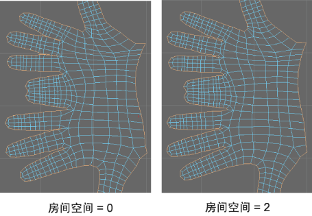

- 方法(Method)
-
使用该选项可以指定 Maya 用于展开 UV 的方法。根据您选择的“方法”(Method)，“展开 UV 选项”(Unfold UVs Option)窗口中会显示不同的选项。从下列方法中选择：
- 展开 3D(Unfold3D)
- （默认）Maya 使用“展开 3D”(Unfold3D)算法。在一次展开运算中，此方法可以消除退化和扭曲，即使在复杂的角点处也是如此。有关展开选项的详细信息，请参见下面的“解算器选项”。
- 旧版(Legacy)
- Maya 使用旧版展开算法。有关“旧版”(Legacy)选项的详细信息，请参见“旧版”(Legacy)选项。
注： 在 Maya 2014 和早期版本中，“旧版”(Legacy)是默认“方法”(Method)
设置
- 修复非流形几何体(Fix non-manifold geometry)
-
对网格执行的“清理”(Cleanup)操作。如果此选项处于禁用状态，则 Maya 将改为输出一条警告并提供选项来手动运行“清理”(Cleanup)操作。
注： Unfold3D 不会在非流形网格上运行。
解算器选项
- 迭代次数(Iterations)
- 指定在展开过程完成后执行“优化”(Optimize)算法的次数（例如，值为 0 将展开网格，但不进行任何优化）。
注： 非常高的迭代次数(Iterations)可能会产生意外的结果。
- 排布 UV(Layout UVs)
- 启用该选项后，每个展开的壳都会在 UV 栅格上自动重新排列。
注： 如果启用该选项，将重用排布 UV 选项(Layout UVs options)窗口的当前设置。根据这些设置的不同，可能会对性能产生显着影响。
- 幂(Power)
- 设置展开运算的强度。“幂”(Power)值越大，展开运算对 UV 贴图的影响就越大。默认值为 100。
- 防止自边界相交(Prevent self border intersections)
- 启用此选项后（默认），可以避免展开 UV 壳的边界自相交。例如，当边界边围绕自身循环时，该选项会自动解开 UV 壳的边界。
- 防止三角形翻转(Prevent triangle flips)
- 启用此选项后（默认），可以避免退化 UV 贴图。移动 UV 以致某个面与自身重叠时，会出现退化。
房间空间选项
- 贴图大小(像素)(Map size (Pixels))
- 选择一个与纹理贴图大小相对应的预设。
- 房间空间(像素)(Room space (Pixels))
- 指定选定 UV 壳各部分之间的距离。
当“房间空间”(Room space)大于 0 时，可防止纹理溢出 UV 边界。应避免将此值增加到超过其默认值（2 个像素），因为这会降低展开计算的速度并产生扭曲。
以下示例显示了一只手的手指。当“房间空间”(Room space)设置为 0 时，一些手指会重叠。当“房间空间”(Room space)设置为 2 时，手指之间的空间会增加。注： “防止自边界相交”(Prevent self border intersections)必须处于打开状态，才能显示“房间空间”(Room Space)选项的效果。
“旧版”(Legacy)选项
仅当“旧版”(Legacy)是选定的“方法”(Method)时，以下选项才可用。
- 权重解算器朝向(Weight solver towards)
-
用于确定两种展开解算器类型（局部和全局）之间的权重的偏移设置。
当“权重解算器朝向”(Weight Solver towards)设定为 0（默认值）时，使用局部解算器进行展开计算。
当“权重解算器朝向”(Weight solver towards)设定为 1 时，使用全局解算器进行展开计算。
当“权重解算器朝向”(Weight solver towards)设定为介于 0 和 1 之间的任意值时，展开结果基于组合解算器计算。
对于大多数展开操作，建议将“权重解算器朝向”(Weight Solver towards)设置设定为 0，这样可以最快地提供结果。
一些多边形配置可能会导致“展开”功能对展开结果产生意外的锥化效果。例如，因局部解算器在展开 UV 时的工作方式，角色的裤腿上从大腿到踝部的锥化形状可能会导致锥化更加夸张。发生这种情况时，通常可通过以下方式改进结果：通过将“权重解算器朝向”(Weight solver towards)设置设定为大于 0 的值（以便将全局解算器考虑在内）来执行其他展开操作。展开操作花费的时间会长很多，但是将减弱锥化效果。当比例更均匀时，您可以仔细地固定 UV 以控制先前采用其他比例的区域，以确保它们不会还原。固定 UV 后，可以通过将“权重解算器朝向”(Weight solver towards)设置设定为 0 来执行后续展开操作。
有关该选项如何发挥作用的示例，请参见解算器权重设置示例。
- 对原始优化(Optimize to original)
-
指定对展开操作使用哪种多边形比较方法。该设置仅在“权重解算器朝向”(Weight solver towards)设置大于 0 时可用，并且可以设定朝向两种比较方法的偏移。
如果“面面积/边长偏移”(Face area/Edge length bias)设置设定为 0.5（默认值），则在确定最终结果时这两种比较方法具有相等的权重。一般来说，对于大多数展开计算，这是不错的起点。
如果设定朝向面区域的偏移，具有高曲率区域的多边形网格可能具有更好的展开结果。该设置可最大程度地减小曲率区域中纹理贴图的弯曲。但是，如果设定的偏移设置完全朝向面区域，则可能会因尝试在面区域偏移指定的约束内进行计算而导致纹理上出现斜切效果。
- 面区域(Face area)
-
通过将各个 UV 的区域与多边形网格的原始面进行比较来比较多边形。
- 边长(Edge length)
-
使用一种将 UV 边的长度与原始多边形的面边进行比较的方法。
- 固定 UV 边界(Pin UV border)
-
在展开操作期间保持 UV 在多边形壳的边界边上的位置。如果您希望壳的边界边不受展开操作影响，请使用该选项。
- 固定 UV (Pin UVs)
-
允许您执行“展开”操作，但固定特定 UV 组合。
- 固定选定 UV (Pin selected UVs)
-
在展开操作期间仅保持选定 UV 的位置。
默认情况下，在展开操作期间，“展开”会重新定位所有选定 UV，未选定 UV 保持固定状态。该选项会反转默认行为。如果特定 UV 展开后已位于所需图案中，并且您需要一些 UV 不受后续展开操作的影响，则该选项可能非常有用。
- 固定未选定 UV (Pin unselected UVs)
-
在展开操作期间仅保持未选定 UV 的位置。这是默认设置。
启用该选项时，在展开操作期间，“展开”会重新定位所有选定 UV，未选定的 UV 保持固定状态。
- 展开约束(Unfold constraint)
-
指定展开时如何对展开 UV 进行约束。
- 无(None)
-
在展开操作期间，UV 在任意方向上自由地展开。
- 垂直(Vertical)
-
在 UV 编辑器中显示时，UV 在垂直方向上受约束。
- 水平(Horizontal)
-
在 UV 编辑器中显示时，UV 在水平方向上受约束。
- 最大迭代次数(Maximum iterations)
-
指定在未达到“停止阈值”(Stopping threshold)的情况下，计算最终展开结果时允许展开解算器执行的最大重复计算次数。达到该最大次数时，展开计算将停止。
提示： 可以随时通过按 键停止展开计算。
键停止展开计算。
如果计算似乎过早停止，只是表示已达到“停止阈值”(Stopping threshold)。默认值为 5000。设定的“最大迭代次数”(Maximum iterations)大于 5000 时，会导致“展开”功能进一步执行计算，直到达到“停止阈值”(Stopping threshold)，并且会延长展开计算的时间。
如果“权重解算器朝向”(Weight solver towards)设定为大于 0 的任何值，则您可能希望开始时将“最大迭代次数”(Maximum iterations)设定为较小的值，如设定 50 作为初始展开迭代。
- 停止阈值(Stopping threshold)
-
指定停止展开计算的数学阈值。在原始多边形网格和展开结果之间比较角度、距离和区域时，该值基于整体改进的内部计算的相对百分比。展开计算将继续进行，直到达到该百分比阈值，或者直到达到“最大迭代次数”(Maximum iterations)设置指定的最大迭代次数。
设定小于 0.001 的值将导致展开时花费较长的时间。如果时间不是问题，还可以将“停止阈值”(Stopping threshold)设定为 0，允许“展开”功能计算最佳结果。
- 重缩放(Rescale)
-
展开计算完成后，调整每个最终的展开 UV 壳，以匹配“比例因子”。可通过以下方法实现该目的：首先确定多边形网格在对象空间 (XYZ) 中的曲面区域，将它与展开的 UV 网格的曲面区域进行比较，然后依照该值缩放 UV 网格。
在展开多个壳并且您需要它们之间具有相似的比例时，该选项非常有用。
- 比例因子(Scale factor)
-
用于确定“重缩放”(Rescale)量的比值。“比例因子”大于 1 会导致 UV 网格放大，而“比例因子”(Scale factor)小于 1 会导致 UV 网格缩小。
例如，如果多边形网格在场景视图中的单位大小为 1，则“比例因子”(Scale factor)设置为 0.02 将导致相应 UV 网格在 UV 编辑器中的单位大小为 0.02。
- 保持历史(Keep history)
-
如果启用“保持历史”(Keep History)，则每当多边形模型的网格发生更改时，“展开”(Unfold)功能都会自动重新计算壳的 UV 纹理坐标位置。这提供了这样一种效果：当网格变形时，纹理似乎随着曲面向内或向外扭曲。
启用“保持历史”(Keep History)可能会导致在设置多边形对象的动画时计算时间较长，从而影响交互性能。仅当您特别希望出现这种特殊效果，并且了解这会在您的场景中对交互性能产生的影响时，才应该启用该选项。
默认设置为禁用。